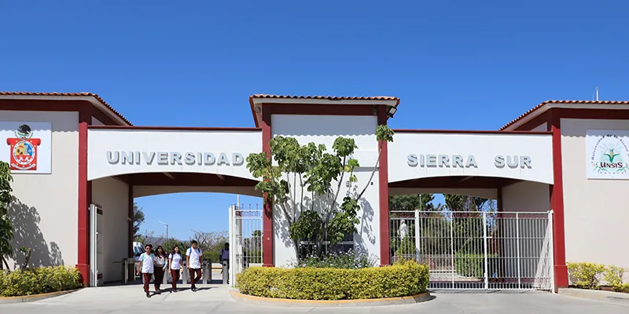
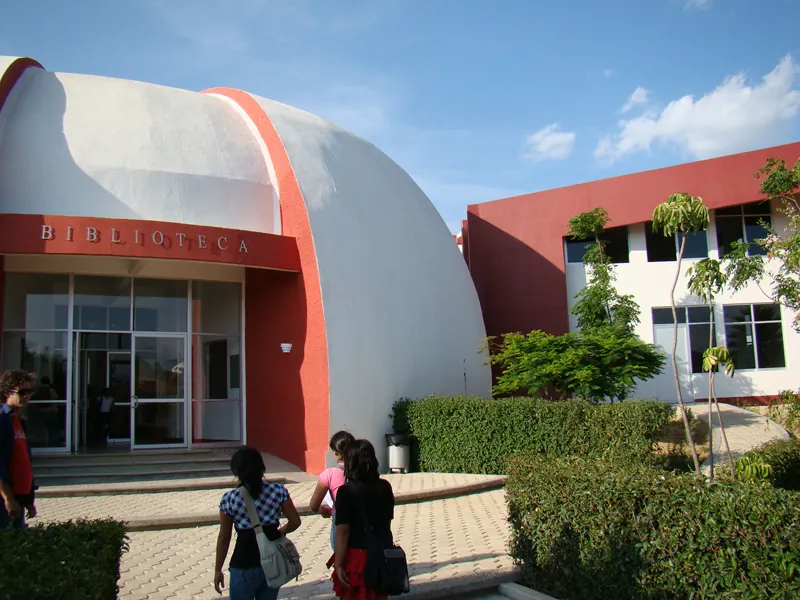

Noticias recientes
Lo que está pasando en el campus, en corto. Toca una nota para leerla completa.
Crear noticia
Escribe tu noticia y selecciona una imagen opcional. Los campos con * son obligatorios.
Conoce la UNSIS
La Universidad de la Sierra Sur es una universidad pública del Gobierno del Estado de Oaxaca y forma parte del Sistema de Universidades Estatales de Oaxaca (SUNEO). Está en Miahuatlán de Porfirio Díaz y ofrece licenciaturas, maestrías y doctorado en las áreas de salud, administración e informática.
Aquí el día no termina con las clases. Así se organiza la vida de cada estudiante:
- Una hora diaria de inglés con profesores angloparlantes de tiempo completo.
- Una hora diaria de biblioteca para estudiar y consultar material.
- Al menos una hora diaria en salas de cómputo con internet.
- Dos estancias profesionales de 280 horas cada una y 480 horas de servicio social.

La UNSIS en cifras
Oferta educativa
Licenciaturas
- Administración Pública
- Ciencias Biomédicas
- Ciencias Empresariales
- Enfermería
- Gobierno y Desarrollo Municipal
- Informática
- Medicina
- Nutrición
- Odontología
Posgrados
Así ha crecido
- 2000
El 2 de octubre empiezan las clases con las licenciaturas en Administración Municipal y Enfermería, y el Técnico Profesional Asociado en Procesos Agroindustriales.
- 2003
Se integra al SUNEO y abre la Licenciatura en Ciencias Empresariales.
- 2004
Llegan Administración Pública e Informática.
- 2009
Abren Nutrición y la Maestría en Planeación Estratégica Municipal.
- 2010
Maestrías en Salud Pública y en Gobierno Electrónico, y el Doctorado en Gobierno Electrónico.
- 2011
La Maestría en Salud Pública se ofrece también en modalidad virtual.
- 2017
Abre la Licenciatura en Odontología.
- 2018
Se incorpora la Licenciatura en Medicina.
- 2022
Abre la Maestría en Administración Universitaria.
- 2024
Se suma la Licenciatura en Ciencias Biomédicas.
Fuente: Historia de la UNSIS.
Egresados
Caminaron por estos pasillos y hoy trabajan en la región y fuera de ella. Esto nos contaron.

Agenda y convocatorias
Apunta estas fechas. El estado de cada evento se actualiza solo con el día de hoy.